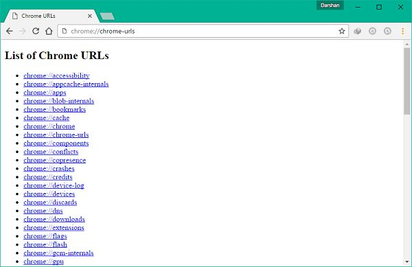
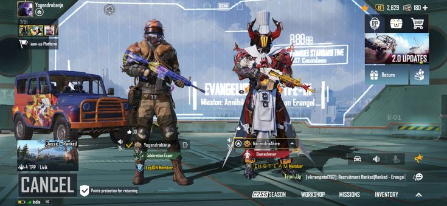
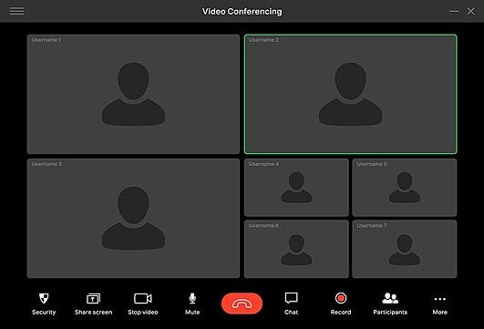

فهم بروتوكول TCP و UDP
نظرة عامة:
بروتوكول التحكم في الإرسال (TCP) و
بروتوكول بيانات المستخدم (UDP)
هما بروتوكولان أساسيان للتواصل يُستخدمان لنقل البيانات عبر الشبكات. على
الرغم من أنهما يخدمان أغراضًا مشابهة، إلا أن أسلوبهما يختلف بشكل كبير،
مما يلبي احتياجات مختلفة في التواصل الشبكي.
ما هو بروتوكول TCP؟
بروتوكول TCP هو بروتوكول موجه نحو الاتصال مصمم للتواصل
الموثوق. يقوم بإنشاء اتصال قبل نقل البيانات ويضمن أن جميع الحزم يتم
تسليمها وبالترتيب الصحيح.
ما هو بروتوكول UDP؟
بروتوكول UDP هو بروتوكول غير موجه نحو الاتصال معروف
بسرعته. على عكس بروتوكول TCP، فإنه لا يضمن تسليم الحزم أو ترتيبها، مما
يجعله مثاليًا للتواصل في الوقت الحقيقي.
إليك الاختلافات الرئيسية بين بروتوكول TCP و UDP:
| العامل |
TCP |
UDP |
| نوع الاتصال |
يتطلب اتصالاً مُؤسسًا قبل نقل البيانات |
لا حاجة لاتصال لبدء وإنهاء نقل البيانات |
| ترتيب البيانات |
يمكنه ترتيب البيانات (إرسالها بترتيب محدد) |
لا يمكنه ترتيب أو تنظيم البيانات |
| إعادة إرسال البيانات |
يمكن إعادة إرسال البيانات إذا فشلت الحزم في الوصول |
لا توجد إعادة إرسال للبيانات. البيانات المفقودة لا يمكن استردادها
|
| التسليم |
التسليم مضمون |
التسليم غير مضمون |
| التحقق من الأخطاء |
التحقق الشامل من الأخطاء يضمن وصول البيانات في حالتها المقصودة
|
التحقق الأدنى من الأخطاء يغطي الأساسيات ولكن قد لا يمنع جميع
الأخطاء
|
| البث |
غير مدعوم |
مدعوم |
| السرعة |
بطيء، ولكن تسليم البيانات كامل |
سريع، ولكن مع خطر تسليم بيانات غير كاملة |
تطبيقات بروتوكول TCP و UDP:
- تطبيقات بروتوكول TCP:
- التواصل عبر البريد الإلكتروني (HTTP/HTTPS).
- نقل الملفات.
- تصفح الويب.


- تطبيقات بروتوكول UDP:
- بث الفيديو.
- الألعاب عبر الإنترنت.
- VoIP (الصوت عبر بروتوكول الإنترنت).


